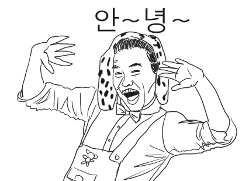
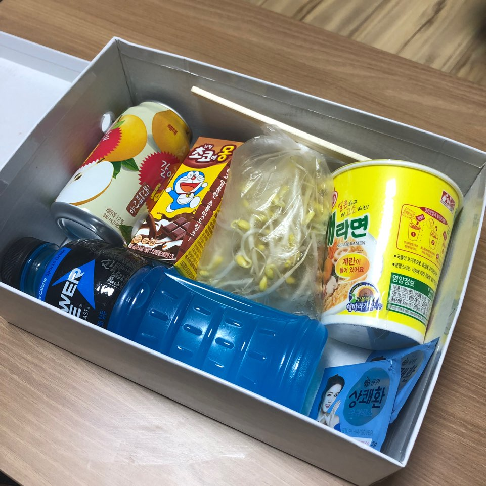
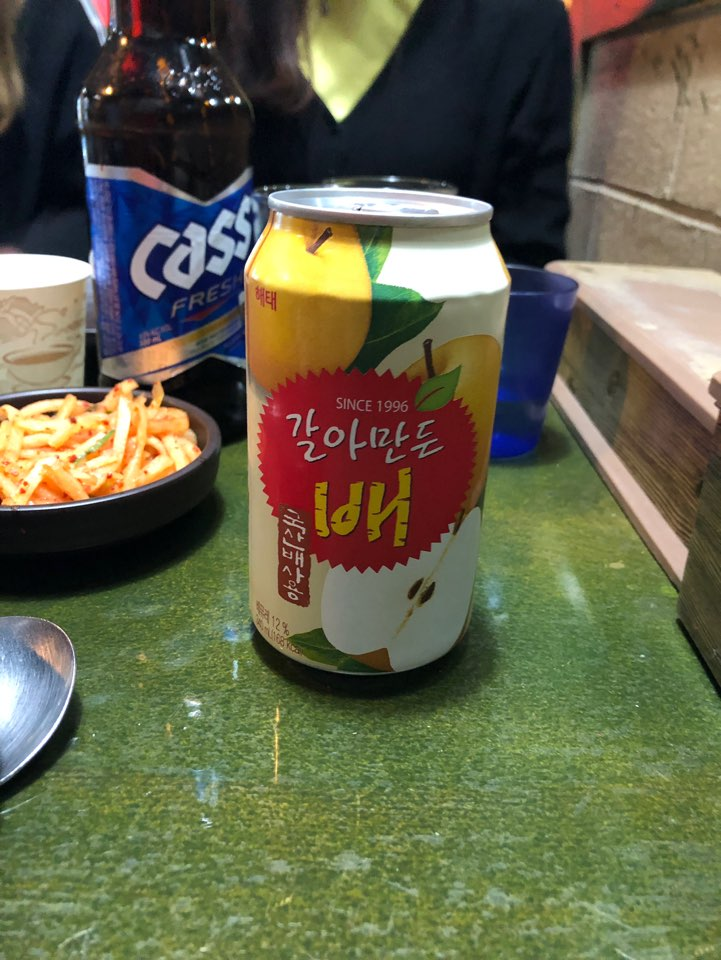
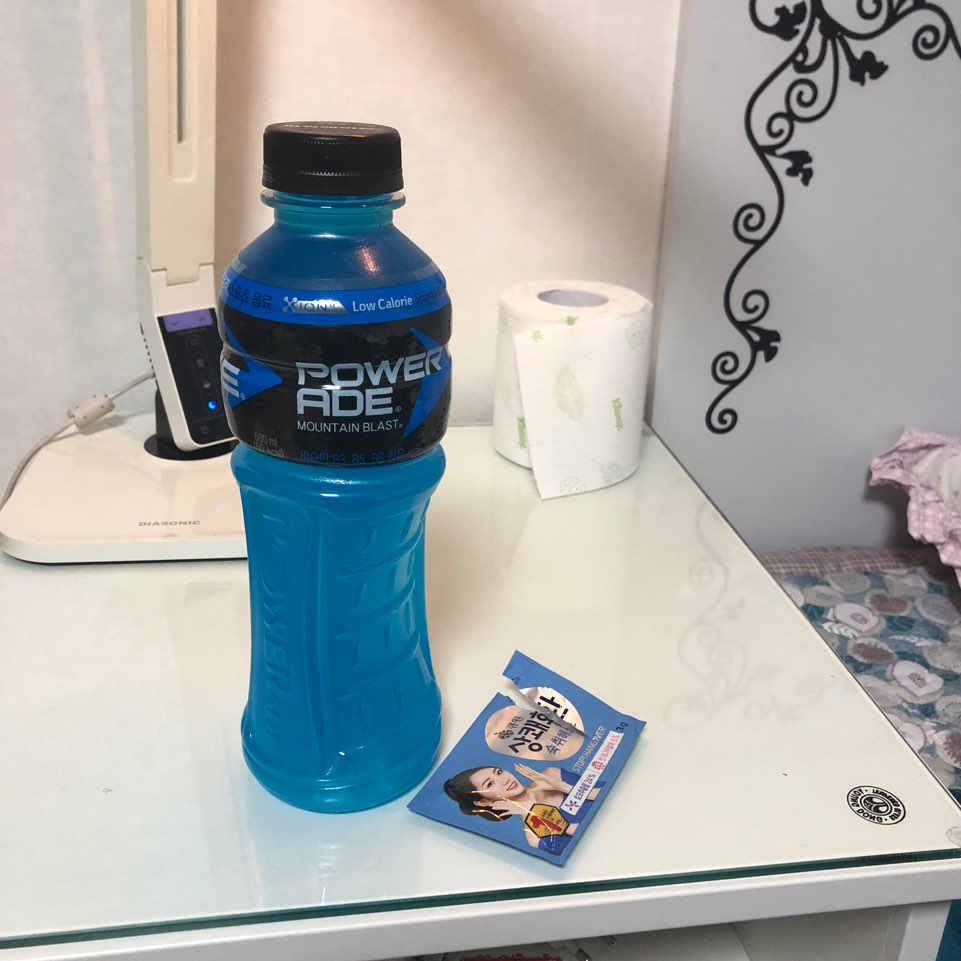
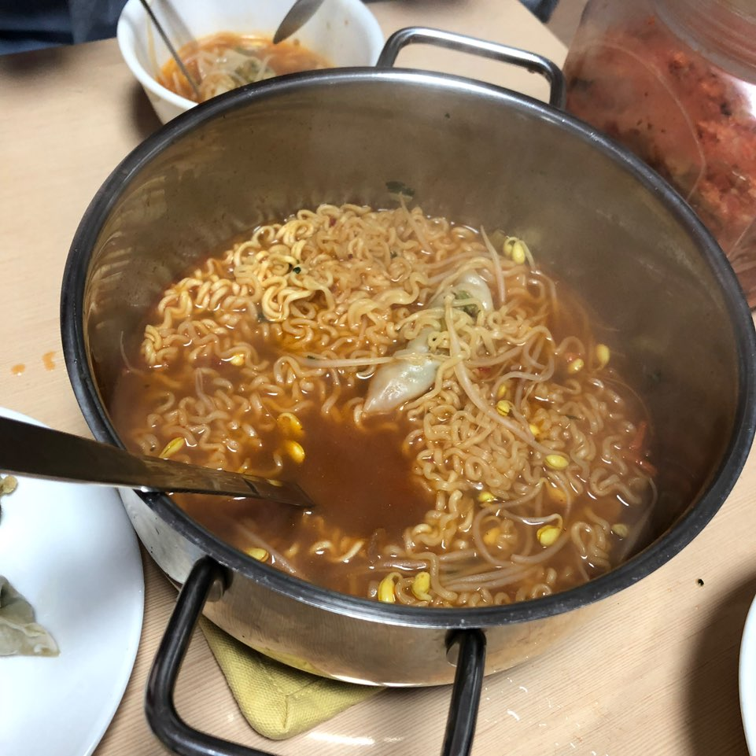

안녕하세요 열어분~ :-)
오늘은 요즘 술자리 필수템이죠! "술찌패키지" 를 리뷰해보도록 하겠습니다!
리뷰를 시작하기 전에 저는 술 두잔이면 얼굴이 빨개지고 다섯잔이면 치사량인 제 일안하는 간을 가진 체질이예요!
그래서 평소에는 술자리를 잘 갖지않는데 이날은 친구의 생일이기 때문에 만만의 준비를 해보았어요^^(그래봤자..)
패키지는 깔끔한 박스에 포장되어 있구요 열어보면 이렇게 구성되어있습니다.
술먹기전, 술먹는 중, 술먹은 후 로 나뉘어져있는데요
술먹기전에는 상쾌한 한포와 바나나, 술먹는 중에는 갈아만든 배 한캔과 초코우유,
술먹은 후로는 라면과 콩나물(라면이 매우 귀염뽀짝하네여), 상쾌한 한포, 파워에이드가 있네요.
이게 "굳이 패키지를 살 필요 있나?" 싶겠지만.. 막상이렇게 한박스가 있으면 정말 편해요.
굳이 매번 뭘 사러 나가지 않아도 되고(귀-찮) 딱 술깨기 좋은 제품들만 있어서 매우 유용하더라구요!
나가기 전에 상쾌한 한포와 바나나를 먹고나가보았습니다.
확실히 술이 조금 덜 취하는 기분이었어요. 기분인가.. 술 먹는 도중 술이 오르기시작할 때
갈배 한캔을 먹으면서 술좀 깨고 또다시한번 취기가 심하게 올라오길래 초코우유까지 클리어!
그렇게 술자리가 파하고 집가서 상쾌한 한포를 더 먹고 기절했다가 아침에 일어나니 갈증이 엄청나더라구요.
왠일로 머리가 아프거나 그러진 않았고 그냥 갈증만 심했어요. 그래서 파워에이드 한병 다 비우고 패키지에 들어있는 컵라면에 콩나물을 넣어 먹었습니다.
원래 해장으로 라면을 먹으면 하나를 다 못먹고 버려서 아까웠는데 작은 컵라면이 들어있어 딱 맞았어요. 거기다가 콩나물이 해장에 좋은건 알았지만 크 일단 국물이 장난아니더라구요

그렇게 해장까지 마치고나니 낮부터는 완벽하게 해소가되었어요. 원래 술먹고나면 숙취가 심한편인데 상쾌한때문인지 이번엔 조금 피곤한 것 말고는 아주 괜찮았습니다.
술찌패키지 아주완벽한것같아요ㅠㅠ 주변 술못드시는 분들에게 가볍게 선물하는것도 아주 좋을 것 같아요!
그럼 이만 안뇽~;> 또 다른 리뷰로 다시 찾아올게용^~^